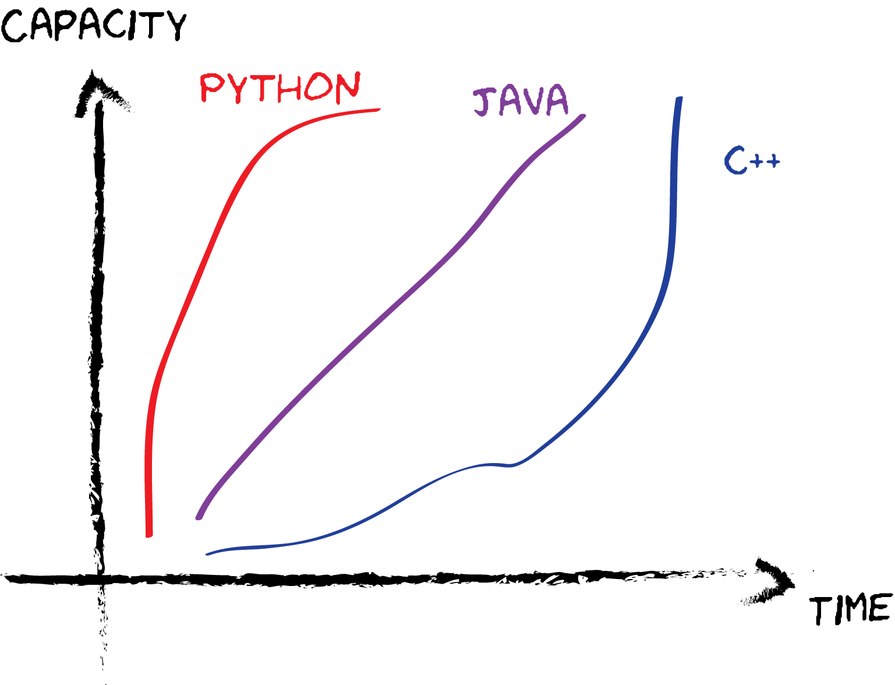
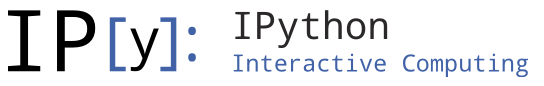

用Python做科学计算
Python for scientific computing
Created by Yuxiang Chen
What did people say about Python?
“Python is the most powerful language you can still read.”
“Python has been an important part of Google since the beginning, and remains so as the system grows and evolves. Today dozens of Google engineers use Python, and we're looking for more people with skills in this language.”
Why Python?
- 易学
- 简便
- 万能
- Free!
易学
简便
print "hello world"
def add(a, b): # define a function
return a+b
with open('workfile', 'r') as f: # open a file
line = f.read()
class Human: # define a class
"""Human docstring"""
def walk(self):
print 'walking ...'
x, y = y, x # switching variables
for a in 'string': # loop
print a
万能
What is this talk about?
- 常用工具 / 库
- 做图
- 如何扩展Python
- 并行计算
- 其他应用
Things to know first - Profiling
$ python -m cProfile -o demo.prof demo.py
Use gprof2dot to visualize the profiling
$ gprof2dot -f pstats demo.prof | dot -Tpng -o demo-prof.png
Things to know first - IDE
- Eclipse + PyDev
- Visual Studio (PTVS)
- PyCharm
建议预装软件包
- Python(x, y)
- Enthought Python Distribution (EPD)
必备工具 - IPython
- 互动
- Auto-completion
- Easy access documentation
- Syntax highlighting
- History retriever
- 分享
常用库 - Demo时间！
- Numpy / Scipy (Matlab for Python)
- Matplotlib (Scientific plotting)
- Sympy (Symbolic mathematics)
- Scikit-learn (Machine learning)
- Scikit-image (Image processing)
- Mayavi (3D plotting)
如何写出高效的Python程序
“Premature optimization is the root of all evil.”
- Profiling!
- 避免大规模For循环
- PyPy
- 扩展Python
- 并行
如何扩展Python
- Python C API / Ctypes
- Ctypes
- SWIG
%module swig_math
%{
#define SWIG_FILE_WITH_INIT
int add(double *f, int dim1, double *g, int dim2, double *out, int dim3);
%}
%include "numpy.i"
%init %{
import_array();
%}
int add(double *IN_ARRAY1, int DIM1, double *IN_ARRAY1, int DIM1, double *INPLACE_ARRAY1, int DIM1);
并行计算
- 多线程
- GPU computing - PyCuda
- Message Passing Interface (MPI)
from mpi import MPI
mpi = MPI()
def pow(x):
return x**2
mpi.begin()
x = range(10)
result = mpi.parfor(pow, x)
mpi.end()
其他应用
Web框架
- Django
- Bottle
- CherryPy
- Flask
- Tornado
其他应用
云计算
- IPython notebook + Amazon EC2
- PiCloud